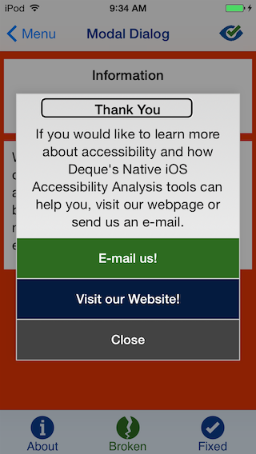

Modal Dialogs are "pop up" notifications that visually alert the user. This includes error messages, warnings, and operations that require user input. They usually appear after a user action. To discuss accessibility issues with Modal Dialogs, let us first go through an example.
Pictured above is a screenshot of the "Broken Version" of the Modal Dialog Demo from our Deque University for iOS app. In it, we demonstrate to users how broken Modal Dialogs can be when considering accessibility. This is the start screen. In this image, VoiceOver is focused on the "Open a modal dialog" button. When we double tap this button, the screen changes to look like the following:
Notice how the VoiceOver focus is not quite aligned with the "Thank You" header of the Modal Dialog. This is because VoiceOver is actually still focused on the "Open a Modal Dialog" button. The fact that the user can still access elements behind the Modal Dialog is bad. No indication is made when the Modal Dialog appears, so to a VoiceOver user, it seems as though it does not exist at all! The only way to get to the Modal Dialog is if the user tabs through every single element on the page. Only then will the focus go to it. For important information, this is not at all optimal. The VoiceOver user may continue to use the app without realizing that anything popped up.
As a side note, this "broken version" was quite simple to make. We used a custom subclass of UIView that gets added to the view controller when the "Open a modal dialog" button is pressed. This subclass contains the Modal Dialog. We do not recommend using this method to create a Modal Dialog.
As the image above suggests, the fixed version actually looks just about the same as the broken version; however, it is implemented completely different. To fix the broken version, we ended up just following what Apple suggests to do to create Modal Dialogs. When the Modal Dialog now appears, a view controller with the Modal Dialog is presented onto the current view controller. When any of the Modal Dialog buttons are pressed, the view controller is dismissed. This automatically is very accessible. As soon as the view controller appears, VoiceOver changes its focus to the new view controller. As the picture suggests, the first element it focuses on with our Modal Dialog is the "Thank You" heading. In addition, an extra sound effect is added when the presentViewController function is called to let the VoiceOver user know that the screen has changed. The sound effect also occurs when the Modal Dialog is closed. Furthermore, when the Modal Dialog has opened, the only accessible elements are the header, the description, and the three buttons. VoiceOver users cannot leave that page until they dismiss the view controller. The only accessibility feature we had to add was UIAccessibilityPostNotification(UIAccessibilityLayoutChangedNotification, button); to change VoiceOver's focus to the "Open a modal dialog" button when the Modal Dialog is closed. Originally, when the user closed a Modal Dialog, VoiceOver would automatically focus on the back button, so we changed its focus to the Modal Dialog button to make sure that VoiceOver users came back to the same place they left off (for navigation purposes).
We originally tried breaking the view controller implementation for our "broken version" - however, it was already very accessible and was very difficult to break. This means that using this method is solid and is highly recommended to use for accessibility purposes.
The best way to create an accessible Modal Dialog is to create the Modal Dialog in a separate view controller and add it into the current view controller with the following code:
Make sure to change the Storyboard ID in the Modal's view controller to "AccessibleModal" (without quotes). This can be found in the Identity Inspector of the view controller in the "Identity" section. In addition, there are multiple types of modal presentation styles; a full list can be found here.UIViewController* modalDialogViewController = [[UIStoryboard storyboardWithName:@"Main" bundle:[NSBundle mainBundle]] instantiateViewControllerWithIdentifier:@"AccessibleModal"]; modalDialogViewController.modalPresentationStyle = UIModalPresentationOverCurrentContext; [self.view presentViewController:modalDialogViewController animated:YES completion:nil];
To remove the Modal Dialog, simply use
Then, to change VoiceOver's focus back to the original button, use[self dismissViewController animation = YES completion = nil];
More about this function can be found under Implementing Dynamic Notifications in this blog post.UIAccessibilityPostNotification(UIAccessibilityLayoutChangedNotification, button);
And that's it! Thank you for reading; we hope you found this tutorial helpful! To learn more about accessibility, visit our other blog posts and download our Deque University for iOS app, available on the App Store and in Github.